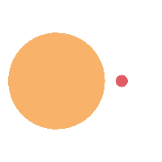

<div
  class="mx-auto flex w-80 flex-col justify-center rounded-2xl bg-gray-50 md:w-96"
>
  <div
    class="flex w-full items-center justify-center gap-2 p-4 text-center text-2xl font-bold text-slate-700"
  >
    <span class="icon-[fa6-solid--otter] text-primary"></span>
    OtterLock
  </div>
  <form [formGroup]="loginForm" (ngSubmit)="handleLogin()">
    <div class="p-4">
      <div class="mb-4">
        <input
          type="text"
          formControlName="email"
          class="w-full rounded-lg border border-slate-300 p-2"
          placeholder="Username"
        />
      </div>
      <div class="mb-4">
        <input
          type="password"
          formControlName="password"
          class="w-full rounded-lg border border-slate-300 p-2"
          placeholder="Password"
        />
      </div>
      <div class="mb-4">
        @if (loadingLogin()) {
          <div
            class="flex w-full cursor-not-allowed items-center justify-center gap-2 rounded-lg bg-primary p-2 font-semibold text-white disabled:cursor-not-allowed disabled:opacity-50"
          >
            Loading
            
          </div>
        } @else {
          <button
            type="submit"
            class="w-full rounded-lg bg-primary p-2 font-semibold text-white disabled:cursor-not-allowed disabled:opacity-50"
            [disabled]="loginForm.invalid"
          >
            Login
          </button>
        }
      </div>
    </div>
  </form>
</div>
<footer class="flex w-full justify-center rounded">
  <p class="mt-4 flex items-center gap-1 text-center text-sm text-gray-500">
    Made with
    <lord-icon
      src="https://cdn.lordicon.com/jjoolpwc.json"
      trigger="loop"
      delay="2000"
      colors="primary:#ffffff,secondary:#dfe2fe"
      style="width: 30px; height: 30px"
    >
    </lord-icon>
    by
    <a
      href="https://porfolio-astro-beta.vercel.app/"
      class="text-blue-300"
      target="_blank"
      rel="noopener noreferrer"
      >David
    </a>
  </p>
</footer>
